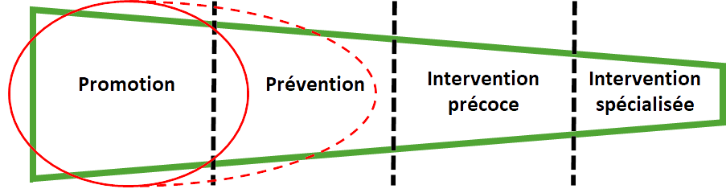
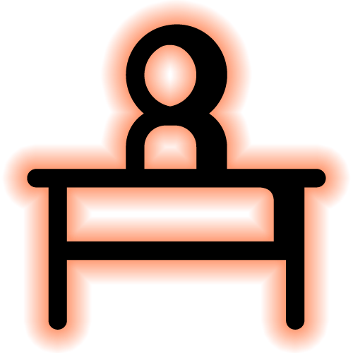
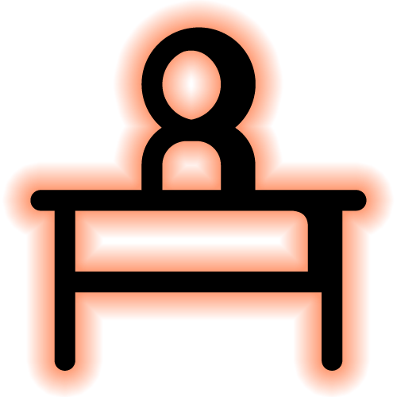

Un projet innovant de promotion de la santé psychologique et du bien-être de la communauté étudiante de l’Estrie
Favoriser le bien-être psychologique de la communauté étudiante post-secondaire de l’Estrie de façon durable
Mettre en place une approche globale adaptée aux besoins et réalités de la communauté pour diminuer les facteurs de risque et augmenter les facteurs de protection
Au-delà de
42 300
étudiants
Plus de
8 000
membres du
personnel

Afin d’assurer que les initiatives implantées aient un réel impact positif sur le bien-être et la santé psychologique de la communauté, celles-ci seront choisies en fonction des meilleures pratiques répertoriées et feront également l’objet d’une évaluation scientifique.
Approche centrée sur la participation et la mobilisation de la communauté visée à chaque étape du procesus d’innovation. Elle favorise :
 
